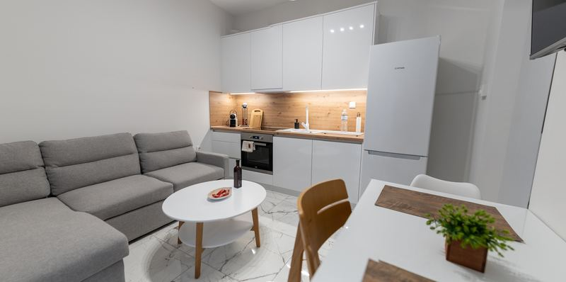

За жилището
до 6 души · 2 спални · 2 легла · 1 разтегателен диван · 1 баня · 60 м²
Модерен, грижливо обзаведен апартамент с две спални и голяма самостоятелна тераса в Сятища.
Обединена дневна с разтегателен ъглов диван, маса за хранене и голям телевизор. Кухнята е напълно оборудвана, с фурна, котлони, хладилник, микровълнова и кафемашина Nespresso.
Първата спалня е с двойно легло с дървена табла, бюро, телевизор и врата към терасата. Втората е с двойно легло, телевизор и нощни лампи, които сменят цвета си.
Модерна баня с душ колона, дървен плот и осветено огледало, с хавлии и козметика.
Голямата тераса с маса и столове е идеална за сутрешното кафе. На ваше разположение са още пералня, ютия, сешоар и сейф.
Удобства
- Голяма тераса
- Wi-Fi
- Климатик
- Отопление
- Телевизор
- Напълно оборудвана кухня
- Кафемашина Nespresso
- Фурна и микровълнова
- Пералня
- Ютия и дъска за гладене
- Сешоар
- Сейф
- Разтегателен диван
- Бюро
- Лампи със смяна на цвета
- Спално бельо
- Хавлии за баня и лице
- Халати за баня
- Шампоан и душ гел
- Четки и паста за зъби
- Паркинг
- Домашни любимци при поискване
- Бебешка кошара безплатно
Местоположение
Mitropoleos 19, 503 00 Siatista